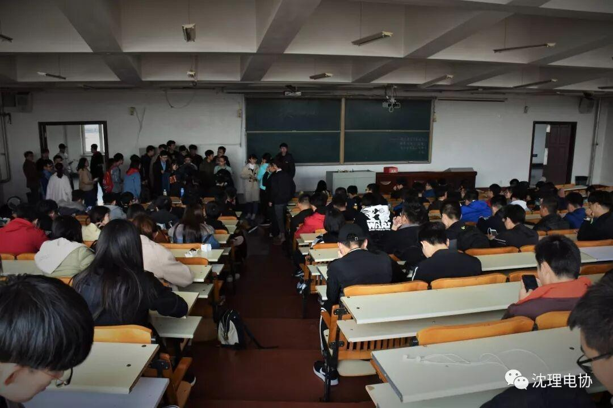
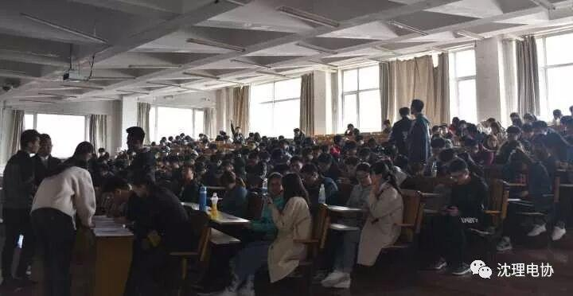
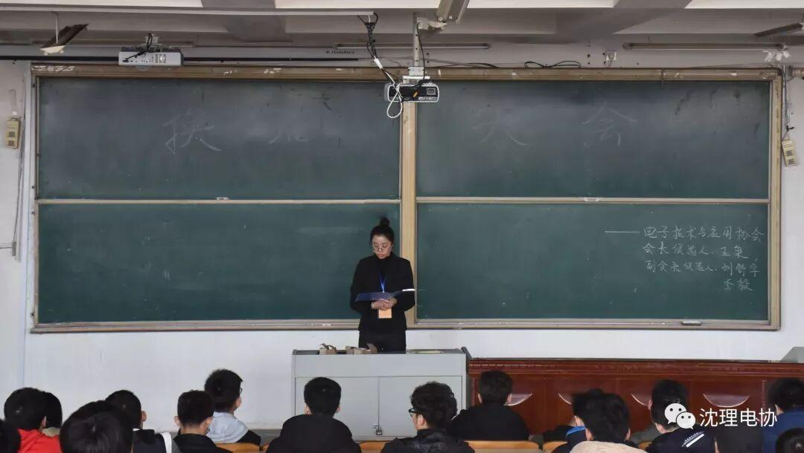
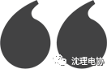

电子技术与运用协会换届选举大会


十点开始，参会人员陆续入场签到，应到300多人，实到234人，实到人数超过总人数的三分之二，2018届电子技术与运用协会换届选举选举正式开始。

▼图为参会人员签到

会长候选人：
王枭，就读于沈阳理工大学信息科学与工程学院，16级电子信息工程专业。
2016-2017学年
社团文化展示月——第二届“理工杯”机器人大赛一等奖；
第十三届辽宁省“挑战杯
”大学生课外科技类竞赛省级三等奖；
组织策划社团文化展示月——理工杯LED设计大赛。
国家励志奖学金。
2017-2018学年
辽宁省大学生电子设计竞赛优秀奖；
辽宁省大学生机器竞赛省级三等奖；
沈阳理工大学共青团系统优秀团干部；
辽宁省移动开发应用大赛省级三等奖；
组织策划电协力量展示会；
组织策划社团文化展示月——电协杯Robotball2017机器人足球赛。
副会长候选人：
刘舒宇，就读于沈阳理工大学信息科学与工程学院，16级电子信息科学与技术专业。
担任学习委员，担任电子技术与应用协会信息部干事。
曾荣获16-17学年校三等奖学金、16-17校优秀学生干部、16-17优秀团员、2017辽宁省机器人竞赛三等奖，2017辽宁省车载应用APP大赛二等奖等荣誉。
组织并参与LED设计大赛，"电协杯"RobotBall2017等比赛。
多次与外校科技类组织、机构进行交流合作。在作为信息部干事时，使其各项工作日益完善。
李毅，就读于沈阳理工大学信息科学与工程学院，16级通信工程专业
担任副班长，曾获2016年辽宁省机器人竞赛三等奖。
在三位候选人发言完毕后，由各参会人员投票决定，投票结束后由选举工作人员唱票,计票。
投票现场
投票现场
计票唱票
最后，就是公布结果的时候：全票通过！


另外，感谢大家过去的辛苦付出，正是你们的付出换来了电协的发展与壮大，为这个社团的后续发展奠定了坚实的基础。我相信，在打架的共同努力之下，电协一定能越走越远！

编辑：张诗梦
图片：张诗梦